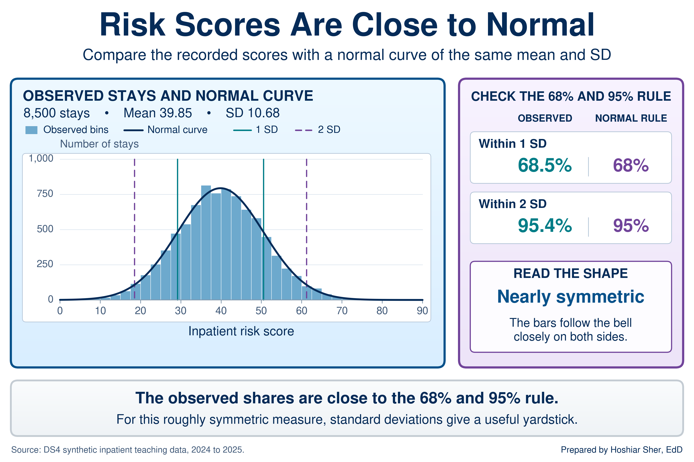
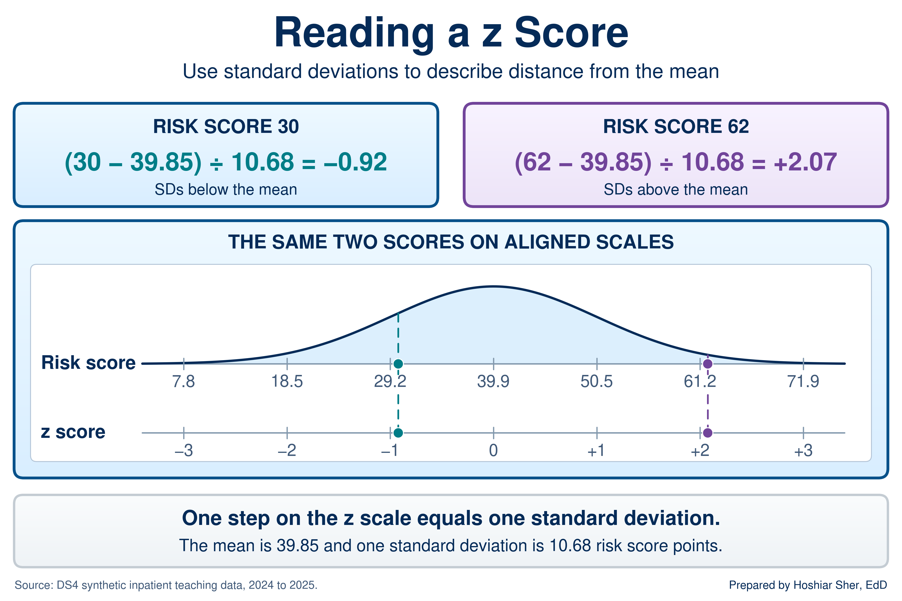
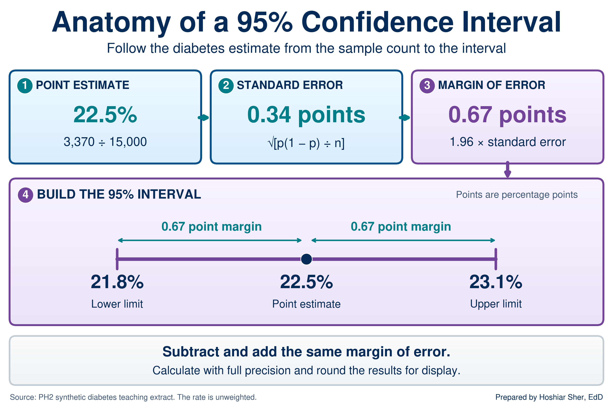
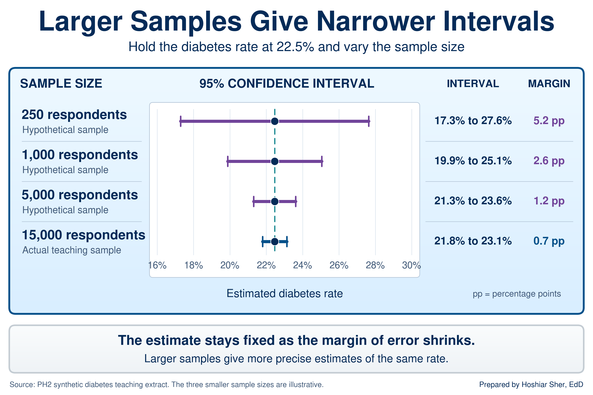
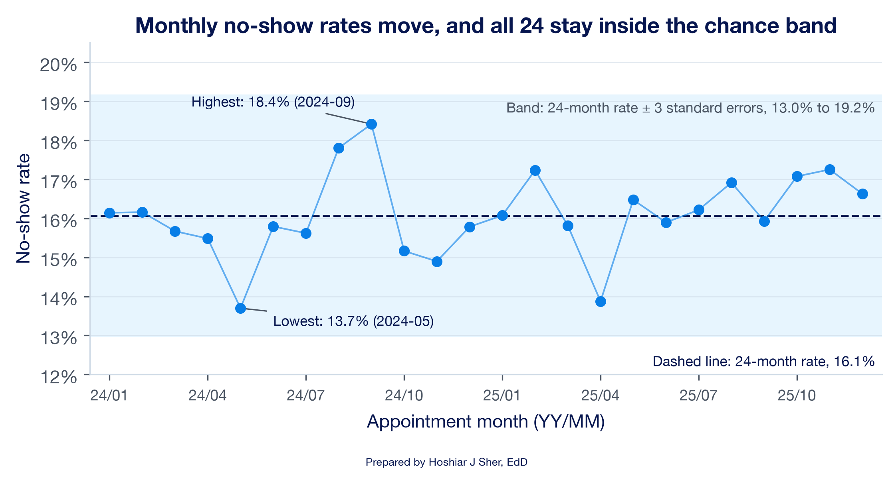
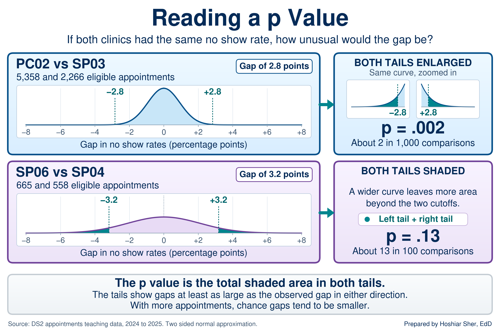
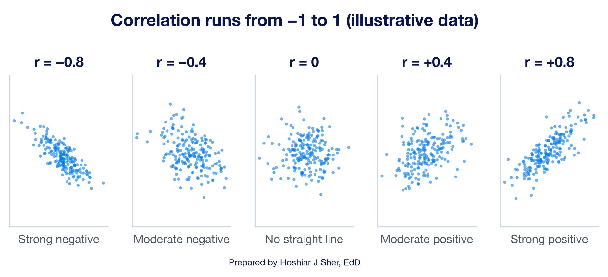
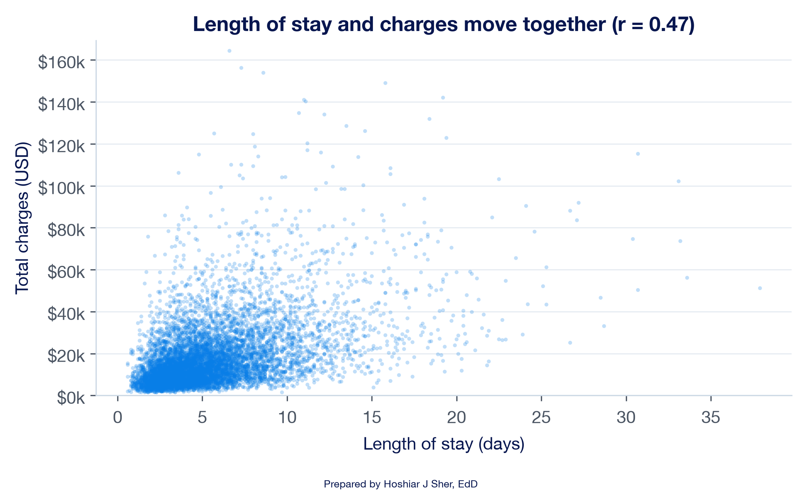

Distributions, Variation, and Statistical Inference
Opening scenario
A clinic operations manager is preparing the quarterly review for the Riverbend outpatient clinics, and two clinic directors asked her, before the data were pulled, to compare their clinics with another clinic in the network. Riverbend Behavioral Health (SP03) has a no-show rate 2.8 percentage points higher than Riverbend South Family Medicine (PC02). Riverbend Women’s Health (SP04) runs 3.2 points higher than Riverbend Pulmonary and Sleep Medicine (SP06). The second gap is larger, so it looks like the more urgent problem, and she plans to ask both clinics for an improvement plan. Before she asks either clinic for a plan, she needs to answer one question about each gap: is it a true difference between the clinics, or could it have happened by chance? The answer depends partly on how many appointments each rate is based on.
Chapter 9 gave you the tools to describe a column: its count, center, spread, and shape. This chapter takes the next step, from describing the data in front of you to judging what they can tell you about the process that produced it. For these two pairs of clinics, the answer runs opposite to what the gap sizes suggest. Table 1 shows the numbers, and the walkthrough shows why.
| Clinic | Name | Kept or missed | No-shows | No-show rate |
|---|---|---|---|---|
| PC02 | Riverbend South Family Medicine | 5,358 | 839 | 15.7% |
| SP03 | Riverbend Behavioral Health | 2,266 | 419 | 18.5% |
| SP06 | Riverbend Pulmonary and Sleep Medicine | 665 | 98 | 14.7% |
| SP04 | Riverbend Women’s Health | 558 | 100 | 17.9% |
By the end of this chapter, you will be able to:
- Describe the normal distribution and use the 68-95 rule and z-scores to judge how unusual a value is.
- Check whether a healthcare measure is close enough to normal for the rule to apply.
- Explain why an estimate varies from sample to sample and how sample size controls that variation.
- Calculate a standard error and a 95 percent confidence interval for a rate and a mean in Excel.
- Distinguish common-cause variation from a signal worth investigating.
- Interpret a p-value correctly, alongside the size of the difference and the width of the interval.
- Calculate and interpret a correlation coefficient without reading it as cause.
Key concepts
Every number you report is one result from a process that could have produced a slightly different value. Statistical inference is the practice of judging, from the data in front of you, how much a result could have moved by chance before you act on it. This section builds that judgment in four parts:
- shape, whether a measure follows the bell-shaped normal pattern, and how far from typical a value sits,
- uncertainty, how much an estimate from a sample would vary, stated as a standard error and a confidence interval,
- variation over time, telling ordinary movement from a signal,
- evidence and relationships, what a p-value and a correlation do and do not show.
The normal distribution and the 68-95 rule
The normal distribution is a symmetric, bell-shaped distribution in which values cluster around the mean and thin out evenly on both sides. The 68-95 rule states that, in a normal distribution, about 68 percent of values fall within one standard deviation (SD) of the mean and about 95 percent fall within two.
Chapter 9 introduced the SD as the typical distance of values from the mean, and it is hard to read on its own. An SD of 90 minutes in emergency department (ED) length of stay is difficult to judge without a reference. The normal distribution gives the SD a meaning. When a measure is roughly normal, the SD works as a yardstick, and the 68-95 rule says how much of the data each step of the yardstick covers (Diez et al., 2019).
Figure 1 shows a measure that fits the pattern closely. The inpatient
file carries a synthetic risk_score for each of its 8,500
stays. Its mean (39.85) and median (39.80) are nearly identical, and its
SD is 10.68. One SD either side of the mean runs from 29.2 to 50.5, and
68.5 percent of stays fall in that band. Two SDs either side run from
18.5 to 61.2 and hold 95.4 percent. The rule predicts 68 and 95.

Three working rules follow from the figure:
- A value within one SD of the mean is ordinary; about two values in three are that close.
- A value more than two SDs from the mean is unusual; about one value in twenty is that far out, split between the two tails.
- The rule describes a symmetric bell. The next two subsections show how to place a value on the yardstick and how to check whether a measure has the bell shape at all.
How far is far: the z-score
A z-score is the number of standard deviations a value sits from the mean: the value minus the mean, divided by the SD. A positive z-score lies above the mean and a negative one below it.
Chapter 8 used the z-score briefly as an outlier test and noted that it depends on the normal distribution. The z-score converts any value to the SD yardstick, so values measured in different units can be read on one scale. Figure 2 places two patients on the risk-score scale. A score of 62 sits 22.15 points above the mean; divided by the SD of 10.68, that is a z-score of 2.07. A score of 30 sits 9.85 points below the mean, a z-score of -0.92.

Read each z-score against the 68-95 rule. A z-score of -0.92 lies inside one SD, so a score of 30 is ordinary. A z-score of 2.07 lies just past two SDs, so a score of 62 is unusual: only about 2 percent of stays score that high. Excel calculates both the z-score and the share of a normal distribution that falls below any value.
With the mean in B2 and the SD in B3:
=STANDARDIZE(62, B2, B3) returns 2.07, the
z-score of a score of 62. =NORM.DIST(62, B2, B3, TRUE)
returns 0.981, the share of a normal distribution below 62,
so about 1.9 percent lies above it. In the inpatient file, 2.2 percent
of stays actually score above 62, close to the normal prediction because
the risk score is close to normal.
A z-score answers “how far is far” in a unit that works for any measure. Within about one SD is ordinary and beyond about two is unusual, but only when the measure is close to normal.
Check the shape before you apply the rule
The 68-95 rule is a property of the normal curve, not of data in general. Many healthcare measures are skewed, and Chapter 9 showed that ED length of stay is one of them: a long right tail of slow visits pulls the mean (210 minutes) above the median (190). Before you use the rule on a measure, check it. Calculate the share of values within one and two SDs of the mean and compare those shares with 68 and 95 percent. Table 2 runs the check on both measures.
| Measure | Mean | SD | Within 1 SD | Within 2 SD | Beyond 2 SD (low / high) |
|---|---|---|---|---|---|
| Normal distribution (the rule) | any | any | 68% | 95% | 2.5% / 2.5% |
| Inpatient risk score | 39.85 | 10.68 | 68.5% | 95.4% | 2.0% / 2.6% |
| ED length of stay (minutes) | 209.8 | 90.3 | 92.3% | 97.5% | 0.0% / 2.5% |
By this check, the risk score is reasonably consistent with the normal pattern; the check is a useful screen, not a formal test of normality. Length of stay departs from the pattern in three specific ways, all visible in Figure 3:
- Too much in the middle. 92.3 percent of visits fall within one SD, not 68 percent, because the long tail inflates the SD while most visits sit tightly packed near the center.
- A one-sided tail. All 434 visits beyond two SDs lie above the mean. None lies below, because a stay cannot be shorter than zero, and the shortest is 74 minutes.
- Wrong predictions in both tails. A normal curve with this mean and SD places 1.0 percent of visits below zero minutes. It also predicts about 307 stays longer than 400 minutes; the file holds 426.
![Figure 3: ED length of stay for the 17,416 visits with a recorded stay, with a normal curve of the same mean (209.8 minutes) and SD (90.3 minutes) and the bounds one SD (solid lines) and two SDs (dashed lines) from the mean. The shares inside each band differ sharply from the 68-95 rule, and the normal curve places 1.0 percent of visits below zero minutes. The 584 left-without-being-seen visits have no length of stay and are excluded; 148 stays above 700 minutes are counted but not drawn. Source: datasets/DS3_ed_throughput_clean.csv, January 2024 to December 2025.](figures/concept/ch_10_distribution_shape.png)
Do not apply the 68-95 rule, z-score cutoffs, or normal-curve percentages to a skewed measure. On length of stay, cost, or wait time, a z-score of 2 does not mean “rarer than about 1 in 40,” and the normal curve can even predict negative minutes. For skewed measures, describe spread with the median and percentiles from Chapter 9 and flag outliers with the interquartile range (IQR) fence from Chapter 8.
The rest of this chapter still relies on the normal curve, but in a way that survives skewed data. The next subsection shows why.
A sample is an estimate: the standard error
Sampling variability is the way an estimate changes from one sample to the next. The sampling distribution is the pattern of estimates that many samples of the same size would produce. The standard error (SE) is the SD of that sampling distribution: the typical distance between a sample’s estimate and the value for the whole population.
Recall from Chapter 4 that a sample stands in for a larger population and that a random sample avoids systematic bias. A random sample does not avoid chance. Two random samples from the same population give two slightly different answers, and both are valid estimates.
Figure 4 makes this visible with
datasets/PH2_brfss2022_teaching_extract.csv. The file is a
synthetic teaching extract modeled on the Behavioral Risk Factor
Surveillance System (BRFSS), a national telephone survey of adults; the
PH prefix marks the book’s public health files, as the
DS prefix marks its operational ones. Treat its 15,000
respondents as a population, in which 22.5 percent report diabetes, and
draw 1,000 random samples of 250 respondents each. The 1,000 sample
rates scatter from about 15 to 32 percent, and their SD, the standard
error, is about 2.7 points. Repeat with samples of 2,500, and the rates
cluster far more tightly, with a standard error of about 0.8 points.
![Figure 4: Diabetes rates in 1,000 random samples of 250 respondents (left) and 1,000 samples of 2,500 respondents (right), drawn with replacement from the 15,000 respondents in the teaching extract, whose rate is 22.5 percent (marked line). Each bar counts samples. The spread of the sample rates is the standard error: about 2.7 points at 250 respondents and 0.8 points at 2,500, close to the formula’s 2.6 and 0.8. Simulated with a fixed random seed. Source: datasets/PH2_brfss2022_teaching_extract.csv.](figures/concept/ch_10_sampling.png)
Two features of the figure carry the rest of the chapter:
- Larger samples give steadier estimates, slowly. Ten times as many respondents cut the standard error to about a third. The standard error shrinks with the square root of the sample size, so quadrupling a sample only halves it.
- The estimates form a bell-shaped pattern. Each respondent’s answer is a 0 or a 1, yet the sample rates form a roughly normal pattern around the population value. Sample means behave the same way, given a large enough sample, even when the individual values are skewed like length of stay (Vu & Harrington, 2020). That is why the normal curve still serves for intervals on rates and means.
In practice you have one sample, not a thousand, so the standard error comes from a formula. Be clear about what the interval describes. The 24 months of clinic records give the exact rate for those appointments; an interval treats them as one sample from the ongoing appointment process, the rate you would expect from comparable future appointments. Figure 4 treats the 15,000 respondents as a known population in order to draw samples from it; the intervals that follow treat the same 15,000 as a sample from a larger hypothetical population.
The standard error of a rate is =SQRT(p*(1-p)/n). On a
new worksheet, for the 3,370 respondents with diabetes among 15,000,
enter =3370/15000 in B1 (it shows
0.2247) and 15000 in B2. Then
=SQRT(B1*(1-B1)/B2) returns 0.0034, a standard
error of 0.34 percentage points. The standard error of a mean is the SD
divided by the square root of n:
=STDEV.S(range)/SQRT(COUNT(range)). Both formulas assume
independent observations. Repeat appointments by the same patient are
not fully independent; in real data they make the true uncertainty
somewhat larger than the formula shows, and methods that account for
this clustering belong to a later course. The rate formula, and the
intervals and tests built on it, also need enough events of each kind: n
times p and n times (1 - p) should each be at least about 10 (Diez et
al., 2019). Every example in this chapter meets that threshold; the one
with the fewest no-shows, SP06, has 98 no-shows and 567 kept
appointments. For rare events or very small groups, the formula
understates the uncertainty.
An estimate from a sample is one draw from a spread of possible results, and the standard error measures how wide that spread is. More data narrows it, but each further gain costs more data than the last.
The confidence interval
A confidence interval reports an estimate as a range: the estimate plus and minus a margin of error. The margin is a multiplier times the standard error, chosen so that intervals built this way capture the population value in about 95 of every 100 samples. For the large-sample rate intervals in this chapter, the 95 percent multiplier is 1.96. For a mean, when the population SD is unknown, Excel uses a slightly larger multiplier from the t distribution.
The multiplier is 1.96 because the sampling distribution is roughly
normal, and in a normal distribution 95 percent of values lie within
1.96 SDs of the mean; the 68-95 rule rounds this to 2. Excel returns the
exact multiplier with =NORM.S.INV(0.975). Figure 5 labels
the parts of the interval for the diabetes rate: the estimate of 22.5
percent, a standard error of 0.34 points, a margin of 0.67 points, and
an interval from 21.8 to 23.1 percent.

Read the interval as a plain statement: the sample puts the rate at 22.5 percent, and population rates from about 21.8 to 23.1 percent are consistent with it. The 95 percent describes the method, not this one interval. The procedure captures the population value in 95 percent of samples; any single interval either contains it or does not, and you cannot tell which. In practice, the interval indicates how much weight the estimate will bear.
Sample size drives the width. Figure 6 holds the 22.5 percent rate fixed and shows the interval it would carry at smaller, hypothetical sample sizes. At 250 respondents, the margin is 5.2 points and the interval runs from 17.3 to 27.6 percent, too wide to separate most groups worth comparing. At 15,000, the margin is 0.7 points.

With the rate in B1, the sample size in B2,
and the standard error in B3
(=SQRT(B1*(1-B1)/B2)): the margin of error is
=NORM.S.INV(0.975)*B3, which returns 0.0067;
the lower limit is =B1-NORM.S.INV(0.975)*B3, which returns
0.218; the upper limit is
=B1+NORM.S.INV(0.975)*B3, which returns 0.231.
For a mean, =CONFIDENCE.T(0.05, sd, n) returns the margin
directly.
The same steps give an interval for a mean, with one change: the
standard error is the SD divided by the square root of n, and
CONFIDENCE.T multiplies it for you. For the inpatient risk
score, on another new worksheet, with the Table named
Inpatient:
B1: =AVERAGE(Inpatient[risk_score]) returns
39.85, the mean. B2:
=STDEV.S(Inpatient[risk_score]) returns 10.68,
the SD. B3: =COUNT(Inpatient[risk_score])
returns 8500, the n. B4:
=CONFIDENCE.T(0.05, B2, B3) returns 0.227, the
margin of error; the 0.05 asks for a 95 percent interval.
The interval is =B1-B4 to =B1+B4, about 39.63
to 40.08.
The width formula can also be inverted. To find the sample size a
target margin needs, square the multiplier, multiply by p times (1 - p),
and divide by the margin squared. For a 1-point margin on the 22.5
percent diabetes rate, with the rate in B1,
=NORM.S.INV(0.975)^2*B1*(1-B1)/0.01^2 returns about
6691.5, so round up to 6,692 respondents.
Intervals also support a first read of a comparison. When the 95 percent intervals for two groups do not overlap, the gap between the groups would be unusual if chance alone were at work. When they overlap, the evidence is weaker.
Overlapping intervals are not proof of no difference. Two intervals can overlap slightly while a formal test still finds the gap unlikely under chance alone, because the uncertainty of a difference is smaller than the two margins added together. Read non-overlap as strong evidence and overlap as “not established by this check.” Going Deeper at the end of the chapter shows the formal test.
Survey data and weights
The intervals above treat the teaching extract as a simple random
sample, and survey data rarely are one. Like the real BRFSS, PH2 carries
a survey weight for each respondent in
final_weight, the number of adults that respondent stands
for, plus stratum and psu (primary sampling
unit) fields that record how the sample was drawn, the stratified and
cluster designs of Chapter 4. Weighting changes the answer. The
unweighted diabetes rate is 22.5 percent; the weighted estimate is 24.9
percent, because respondents with larger weights report diabetes more
often (28.1 percent in the top quarter of weights against 17.5 percent
in the bottom quarter).
The design fields change the standard error too, and real BRFSS analyses compute design-based intervals with survey software (Centers for Disease Control and Prevention [CDC], n.d.).
Two habits follow:
- Name what an unweighted rate describes. The 22.5 percent in this chapter is a rate in a synthetic teaching sample, deliberately set well above the diabetes prevalence CDC publishes for U.S. adults (CDC, 2026), and it does not estimate prevalence in any real population.
- Read the documentation first. Before you summarize any survey file, find out whether it is meant to be weighted and which design fields it carries.
Common-cause and special-cause variation
Common-cause variation is the ordinary, expected movement of a stable process from one period to the next. Special-cause variation is a change large enough, or sustained enough, that chance alone is an unlikely explanation and something in the process has likely changed.
The standard error also explains why performance measures move when nothing has changed. A monthly no-show rate is an estimate built from that month’s appointments, so it carries sampling variability just as a survey rate does. Figure 7 shows the clinics’ combined monthly no-show rate over 24 months. The rate averages 16.1 percent and moves between 13.7 percent (May 2024) and 18.4 percent (September 2024).
How much of that movement would chance produce on its own? With an average of 1,274 kept-or-missed appointments a month, the standard error of a monthly rate is about 1.0 percentage point. Quality-improvement charts conventionally set limits three standard errors either side of the average (Provost & Murray, 2022), here about 13.0 to 19.2 percent, and all 24 months fall inside them.
This is an approximate teaching band built from the average volume. Strictly, a control chart for a rate, called a p-chart, gives each month its own limits from its own count; here months range from 1,143 to 1,387 appointments, and every month also falls inside its own limits. No monthly rate exceeds these illustrative limits, but that check alone does not establish a stable process: a sustained shift or trend can stay inside them. Read this way, nothing in the series points to a special cause. The lowest month is not evidence of an improvement in May 2024, and the highest is not evidence of a deterioration in September.

Telling the two kinds of variation apart is a core skill in reading performance data (Benneyan et al., 2003), and there are two ways to misread it:
- Treating common-cause movement as a signal wastes effort. A team investigates, explains, or rewards a change that chance produced, and the next month reverses it.
- Missing a special cause allows a real problem to continue, because a genuine shift was dismissed as noise.
Chapter 11 returns to this series. It adds run rules for spotting a shift that stays inside the band, such as a long run of months on one side of the center line, and separates a run chart, which uses the median and no limits, from a control chart, which adds limits like these.
Before you react to a month, ask whether it falls outside the range chance produces at that volume. A single month inside the band is not, by itself, evidence that anything changed.
Interpreting a p-value
A null hypothesis is the assumption that there is no real difference, for example that two clinics share one no-show rate. A p-value is the probability of seeing a difference at least as large as the one observed if the null hypothesis were true. A result is called statistically significant when its p-value falls below a threshold chosen in advance, by convention 0.05.
Return to the opening scenario. Suppose PC02 and SP03 truly shared one no-show rate. Chance would still produce some gap between their observed rates, and the size of a typical chance gap depends on how many appointments each clinic has. Figure 8 draws the gaps chance would produce for each pair and marks the gap actually observed.
- PC02 and SP03. With 5,358 and 2,266 appointments, chance gaps are small. A gap of 2.8 points or more, in either direction, would occur about 2 times in 1,000 (p = 0.002). A gap this large would be unusual under the no-difference model.
- SP06 and SP04. With only 665 and 558 appointments, chance gaps are wide. A gap of 3.2 points or more, in either direction, would occur about 13 times in 100 (p = 0.13). A gap this large is not unusual under the no-difference model.

The p-value answers one narrow question, and its scope is often overstated (Wasserstein & Lazar, 2016):
- It is not the probability that the clinics differ or that the null hypothesis is true. A p-value of 0.002 does not mean a 99.8 percent chance of a real difference.
- It does not measure how large or important a difference is. The size of the difference itself, here 2.8 or 3.2 percentage points, is the effect size, and it is what a manager needs to judge whether a gap matters.
- A p-value above 0.05 does not show that two groups are the same. It shows that the data do not provide enough evidence to distinguish the groups at the chosen threshold.
A small p-value means a difference this large would be unusual if there were no real difference, not that it is large or important. A large sample can make a trivial gap statistically significant, and a small sample can leave a real gap undetected. Report a p-value next to the effect size and the confidence interval, never alone (Greenland et al., 2016).
The manager in the opening tests two comparisons named before the data were pulled. Comparisons chosen after looking at the data, or run across many pairs, produce some small p-values by chance alone. The 14 clinics form 91 possible pairs, and at a 0.05 threshold about 4 or 5 of them would cross it even if every clinic shared one rate. Treat a small p-value found by searching as a lead to confirm with new data, not a finding.
This book keeps the p-value at the level of interpretation. Going Deeper at the end of the chapter shows where these two values come from.
Correlation: how tightly two numbers move together
The sections so far asked how much one estimate could move by chance. Correlation turns to a different question that later chapters build on: how two measures move together. It introduces regression in Chapter 12.
The correlation coefficient, written r,
measures the strength and direction of the straight-line relationship
between two numerical variables on a scale from -1 to 1. A value near 1
means the two rise together, a value near -1 means one falls as the
other rises, and a value near 0 means no straight-line relationship.
Figure 9 shows what different values of r look like. Two
points help when you read one:
- Strength is about tightness, not slope. An
rof 0.8 means the points lie close to a line; it says nothing about how steep the line is. - A weak correlation is not the same as no
relationship.
rmeasures straight-line association only, so a strong curved pattern can produce anrnear 0. Plot the data before you rely onr. - Use one scale for strength. This book calls an
rbelow 0.3 in absolute value weak, 0.3 to 0.7 moderate, and above 0.7 strong. These cutoffs are a convention for describing results, not a test.

Figure 10 shows a real pair: inpatient length of stay against total
charges for 8,500 stays. The correlation is 0.47, a moderate positive
relationship with wide scatter around the line. Squaring r
gives about 0.22, the share of the variation in charges that a straight
line on length of stay accounts for. Chapter 12 reports the same 0.22 as
R-squared when it fits that line.

With the inpatient file converted to a Table named
Inpatient:
=CORREL(Inpatient[length_of_stay_days], Inpatient[total_charges_usd])
returns 0.467.
=RSQ(Inpatient[total_charges_usd], Inpatient[length_of_stay_days])
returns 0.218, the r squared that Chapter 12 calls
R-squared.
Correlation measures how tightly two measures move together, not why. Longer stays and higher charges go together, but a correlation alone cannot show which drives which, or whether a third factor, such as how sick the patient is, drives both.
Open datasets/DS4_inpatient_clean.csv, convert it to a
Table named Inpatient, and calculate the correlation
between age_at_admit and length_of_stay_days
with CORREL. Describe its strength and direction in one
sentence, square it to state how much of the variation in length of stay
a straight line on age accounts for, and name one thing the correlation
does not show. The answer key is at the end of the chapter.
Walkthrough: build a clinic comparison with confidence intervals
This build answers the opening scenario. You calculate the no-show
rate for the four clinics in Table 1, attach a standard error and a 95
percent confidence interval to each, check whether each pair of
intervals overlaps, and chart the rates with error bars. Every number on
the sheet is computed by a formula that reads from the
Appointments Table, so adding a clinic starts with adding a
row; you then extend the formulas, the chart ranges, and the comparisons
to cover it. Figure 11 shows the finished result.
![Figure 11: The finished Intervals worksheet you build in this walkthrough, and the chart it feeds. Rows 3 to 7 hold the counts, rates, standard errors, margins, and 95 percent limits for four clinics; row 9 holds the multiplier from NORM.S.INV(0.975); rows 11 to 13 compare the two pairs; the chart draws each rate with its interval as an error bar. The highlights show which cells drive the chart: the rates in D4:D7 set the bar lengths, and the margins in F4:F7 supply both the positive and negative error values in the Specify Value dialog of Part F. Excel lists the first clinic at the bottom of a bar chart. The figure is styled for print: the multiplier is shown rounded to 1.96, and the data labels and highlights are added. Your worksheet should carry the same values in the same cells. Source: datasets/DS2_appointments_clean.csv, January 2024 to December 2025.](figures/concept/ch_10_checkpoint.png)
Before you start: open
datasets/DS2_appointments_clean.csv, and immediately save a
working copy as an Excel workbook so the original stays untouched. Work
only in the copy. These teaching files hold no real patient information;
real patient data must stay in approved, secure storage, and you should
make a local working copy only when you are authorized to.
Part A. Set up the data. Convert the raw file into a named Table so every formula can refer to its columns by name.
- Open
datasets/DS2_appointments_clean.csvin Excel. - Choose File > Save As, pick Excel
Workbook (.xlsx), and name it
ch10_intervals.xlsx. Work in this file from here on. - Click any cell inside the data. On the Insert tab, click Table, confirm My table has headers is checked, and click OK.
- On the Table Design tab (named
Table on macOS), set the Table Name to
Appointments. - Add a worksheet with the + beside the sheet tabs,
double-click the new tab, type
Intervals, and press Enter. - In
A1typeClinic No-Show Rates with 95% Confidence Intervals. SelectA1:H1, choose Home > Alignment > Merge & Center, then make it Bold, size 14, with a dark blue Fill Color and white Font Color.
Part B. Count the appointments. The rate uses the kept-or-missed denominator from Chapter 1: completed visits plus no-shows, with cancellations and reschedules excluded.
- In
A3:H3type the headersClinic,No-shows,Kept or missed,Rate,Std error,Margin,Lower, andUpper, one per cell. SelectA3:H3and click Bold. - In
A4:A7type the clinic codesPC02,SP03,SP06, andSP04, one per row. - In
B4enter
=COUNTIFS(Appointments[facility_id], A4, Appointments[attendance_outcome], "No Show")
It shows839. - In
C4enter
=COUNTIFS(Appointments[facility_id], A4, Appointments[attendance_outcome], "Completed") + B4
It shows5358, the kept-or-missed appointments at PC02. - Select
B4:C4and drag the fill handle down to row 7. BecauseA4is relative (no dollar signs), each row counts its own clinic. Row 7, SP04, shows100and558.
Part C. Calculate the rate and its standard error.
- In
D4enter=B4/C4. It shows about0.1566. - In
E4enter=SQRT(D4*(1-D4)/C4). It shows about0.0050, a standard error of half a percentage point. - Select
D4:E4and drag the fill handle down to row 7. SP04 shows a rate of about0.1792and a standard error of about0.0162, about three times PC02’s, because SP04 has about a tenth as many appointments.
Part D. Build the 95 percent interval. Store the multiplier once and lock it, so every row uses the same value.
- In
A9type95% multiplier; inB9enter=NORM.S.INV(0.975). It shows1.959964, the 1.96 from the definition. - In
F4enter=$B$9*E4. It shows about0.0097. The absolute reference$B$9keeps every row pointed at the multiplier when you copy the formula (Chapter 6). - In
G4enter=D4-F4. It shows about0.1469, the lower limit. - In
H4enter=D4+F4. It shows about0.1663, the upper limit. - Select
F4:H4and drag the fill handle down to row 7. - Select
D4:D7, holdCtrl(Cmdon macOS), also selectG4:H7, click Home > Number > Percent Style, and click Increase Decimal once. PC02 now reads15.7%,14.7%, and16.6%. - Select
E4:F7, click Percent Style, and click Increase Decimal twice. PC02’s standard error and margin read0.50%and0.97%.
Part E. Read the comparisons. Each check asks whether the higher clinic’s lower limit sits above the other clinic’s upper limit; in both pairs, the second clinic has the higher rate.
- In
A11:C11typeComparison,Gap, andIntervals, and make them Bold. - In
A12typePC02 vs SP03; inB12enter=D5-D4and format it as a percentage with one decimal. It shows2.8%, a gap of 2.8 percentage points. - In
C12enter=IF(G5>H4, "No overlap", "Overlap"). It showsNo overlap: SP03’s lower limit (16.9 percent) sits above PC02’s upper limit (16.6 percent). - In
A13typeSP06 vs SP04; inB13enter=D7-D6and format it the same way. It shows3.2%. - In
C13enter=IF(G7>H6, "No overlap", "Overlap"). It showsOverlap: SP04’s lower limit (14.7 percent) sits below SP06’s upper limit (17.4 percent).
Part F. Chart the rates with error bars. An error bar draws each interval on the chart, so a reader sees the uncertainty and the rate together. Custom error bar values need desktop Excel for Windows or macOS; Excel for the web cannot set them.
- Select
A3:A7, holdCtrl(Cmdon macOS), also selectD3:D7, and choose Insert > Charts > Clustered Bar. Title the chartNo-show rate with 95% confidence interval. - With the chart selected, open the error bar options. On Windows, click the Chart Elements button (+) beside the chart, point to Error Bars, click its arrow, and choose More Options. On macOS, choose Chart Design > Add Chart Element > Error Bars > More Error Bars Options.
- In the Format Error Bars pane, confirm Direction: Both and End Style: Cap. Under Error Amount, choose Custom and click Specify Value.
- In the dialog, clear the Positive Error Value box
and select
F4:F7; clear the Negative Error Value box and selectF4:F7again; click OK. Each bar now carries its interval. SP03’s whisker starts just to the right of where PC02’s ends, and the SP06 and SP04 whiskers overlap.
Part G. Format and finish.
- Select
A3:H7, holdCtrl(Cmdon macOS), also selectA11:C13, and apply Home > Font > Borders > All Borders. - Click the Select All button and choose Home > Format > AutoFit Column Width.
- Save with Ctrl+S (Cmd+S on macOS). Your sheet should resemble Figure 11.
Now return to the manager’s question. The smaller gap, 2.8 points between PC02 and SP03, is the one the data support: the intervals do not overlap, and a gap this large would be unusual if the clinics shared one rate. The larger gap, 3.2 points between SP06 and SP04, is not unusual under the no-difference model with 665 and 558 appointments; SP04’s interval alone spans more than 6 points.
That does not prove the two clinics are the same. With these sample sizes, the analysis does not establish a difference between them, and a nonsignificant result does not rule out a meaningful one. Acting on the gap would risk acting on noise.
Neither comparison explains why a gap exists. A behavioral health clinic and a family medicine practice serve different patients for different reasons, and a comparison of rates finds an association, not a cause.
Practice on your own
These exercises reuse the walkthrough’s techniques on new questions. The first is fully guided, like the walkthrough. The second provides less guidance: it names the functions and gives values to check against, but leaves you to assemble the formulas.
Practice A: how unusual is a long ED stay?
Test the 68-95 rule on ED length of stay, convert a stay to a z-score, and then put a confidence interval on the mean stay for two dispositions. The second part answers a question Chapter 9 left open: how much less stable is a summary based on 186 transfers than one based on 13,769 discharges home?
- Open
datasets/DS3_ed_throughput_clean.csv, then choose File > Save As and save a copy namedch10_ed_shape.xlsx. - Click any cell inside the data, choose Insert >
Table, confirm My table has headers, and click
OK. On the Table Design tab, set the
Table Name to
ED. - Add a worksheet named
Shape. InA1typeED Length of Stay: Shape and Uncertainty, then mergeA1:G1, and format it bold, size 14, with a dark fill and white font. - In
A3typeMeasureand inB3typeValue; makeA3:B3Bold. - In
A4typeVisits with a stay; inB4enter=COUNT(ED[length_of_stay_minutes]). It shows17416. - In
A5typeMean stay (min); inB5enter=AVERAGE(ED[length_of_stay_minutes]). It shows about209.8. - In
A6typeSD (min); inB6enter=STDEV.S(ED[length_of_stay_minutes]). It shows about90.3. - In
A7typez-score of 400 min; inB7enter=STANDARDIZE(400, B5, B6). It shows about2.11. - In
A8typeShare within 1 SD; inB8enter
=COUNTIFS(ED[length_of_stay_minutes], ">="&(B5-B6), ED[length_of_stay_minutes], "<="&(B5+B6))/B4
Format it as a percentage with one decimal. It shows92.3%; the rule predicts 68 percent. - In
A9typeShare within 2 SD; inB9enter the same formula with2*B6in place ofB6in both places. It shows97.5%. - In
A10typeStays above +2 SD; inB10enter=COUNTIF(ED[length_of_stay_minutes], ">"&(B5+2*B6)). It shows434. InA11typeStays below -2 SD; inB11enter=COUNTIF(ED[length_of_stay_minutes], "<"&(B5-2*B6)). It shows0. - In
A12typeNormal predicts above 400; inB12enter=1-NORM.DIST(400, B5, B6, TRUE)and format it as a percentage. It shows1.8%. InA13typeActual above 400; inB13enter=COUNTIF(ED[length_of_stay_minutes], ">400")/B4. It shows2.4%. The file holds about 40 percent more long stays than the normal curve predicts. - In
A15:G15typeDisposition,Stays,Mean stay,SD,Margin,Lower, andUpper, and make the row Bold. InA16typeHomeand inA17typeTransfer. - In
B16enter=COUNTIFS(ED[disposition], A16). It shows13769. - In
C16enter=AVERAGEIFS(ED[length_of_stay_minutes], ED[disposition], A16). It shows about183.6. - In
D16enter=STDEV.S(FILTER(ED[length_of_stay_minutes], ED[disposition]=A16)). It shows about32.2. (FILTERneeds Excel 2021 or Microsoft 365. On Excel 2019, enter=STDEV.S(IF(ED[disposition]=A16, ED[length_of_stay_minutes]))and confirm it with Ctrl+Shift+Enter, the same keys on macOS.) - In
E16enter=CONFIDENCE.T(0.05, D16, B16). It shows about0.54, the margin of error in minutes. - In
F16enter=C16-E16and inG16enter=C16+E16. They show about183.0and184.1. - Select
B16:G16and drag the fill handle down to row 17. Transfer shows186stays, a mean of about299.2, an SD of about42.2, a margin of about6.11, and limits of about293.1and305.3. - Apply All Borders, click the Select All button, choose AutoFit Column Width, and save.
The transfer margin, about 6.1 minutes, is more than ten times the home margin of 0.5 minutes, because the transfer group is 74 times smaller and its stays vary more. Both intervals are still narrow next to the gap of nearly two hours between the groups, so the estimated mean stays are widely separated, although the intervals still depend on the assumptions of the analysis; the transfer figure is less precise. With samples this large, the sampling distribution of the mean is approximately normal, so the t interval generally holds up despite the skew of the individual stays. With small samples from a skewed measure, it is less reliable.
Practice B: diabetes rates by group
Build a table of diabetes rates with 95 percent intervals for two ways of grouping the teaching extract’s respondents, with less guidance. This exercise names the functions and gives you values to check against, but leaves the formulas for you to build.
Goal: a table of rates with intervals for insured and uninsured respondents and for six age groups, and a bar chart of the age groups with error bars.
- Open
datasets/PH2_brfss2022_teaching_extract.csv, save a copy namedch10_brfss.xlsx, and convert the data to a Table namedBRFSS. - Add a worksheet named
Groups. InA3:H3type the headersGroup,With diabetes,Respondents,Rate,Std error,Margin,Lower, andUpper, the same layout as the walkthrough. - In
A4typeInsuredand inA5typeUninsured. InA7:A12type the six age groups exactly as the file records them:18-24,25-34,35-44,45-54,55-64, and65+.- If Excel turns an entry into a date, type an apostrophe first
(
'18-24).
- If Excel turns an entry into a date, type an apostrophe first
(
- In column
C, count the respondents in each group with=COUNTIFS(...).- For the insurance rows, the condition is
BRFSS[insured_flag]equal to1or0. - For the age rows, the condition is
BRFSS[age_group]equal to the value in columnA, kept relative so it copies down.
- For the insurance rows, the condition is
- In column
B, count the respondents with diabetes by adding a second condition pair,BRFSS[diabetes_flag]equal to1. For the insured row,B4is=COUNTIFS(BRFSS[insured_flag], 1, BRFSS[diabetes_flag], 1); build the other rows the same way. - Calculate the rate, standard error, margin, and limits as in Parts C
and D of the walkthrough. Store
=NORM.S.INV(0.975)inB14and lock it with$B$14. - Chart the six age groups as a Clustered Bar with custom error bars from the margin column, as in Part F.
- Apply All Borders, AutoFit Column
Width, and save.
- Check your work: insured respondents number
13,133, with2,951reporting diabetes, a rate of22.5%(21.8%to23.2%). Uninsured respondents number1,867, with419reporting diabetes, a rate of22.4%(20.5%to24.3%). The age-group rates rise from10.1%at18-24(8.7%to11.5%) to36.5%at65+(34.8%to38.2%). If the margins after the first row show0.0%and the limits equal the rate, the multiplier cell was not locked with$B$14. - The two insurance groups have nearly the same rate, but the uninsured interval is almost three times as wide because the group is a seventh the size. These are unweighted rates in a synthetic teaching extract, and an association with age is not proof that age alone explains the difference.
- Check your work: insured respondents number
A clinic surveys 200 patients and finds that 60 percent are satisfied. Its health system’s benchmark is 55 percent. Calculate the standard error and the 95 percent confidence interval for the clinic’s rate. Then decide whether the clinic can claim to exceed the benchmark, and explain why in one sentence. Finally, estimate how many patients the clinic would need to survey, at the same 60 percent rate, for the interval to clear 55 percent. The answer key is at the end of the chapter.
Going deeper
The overlap check in the walkthrough is a screen, not a test. The
formal version compares the gap between two rates with the standard
error of the gap itself. Pool the two clinics to estimate one shared
rate, calculate the standard error of a difference from that shared rate
and both sample sizes, and divide the observed gap by it. The result is
a z-score for the gap: 3.04 for PC02 and SP03, and 1.51 for SP06 and
SP04. Read against the normal curve, those z-scores give the p-values in
Figure 8; in Excel, =2*(1-NORM.S.DIST(3.04, TRUE)) returns
0.002. A confidence interval for the gap itself is the gap
plus and minus 1.96 times
SQRT(p1*(1-p1)/n1 + p2*(1-p2)/n2). For PC02 and SP03 the
gap is 2.8 points (1.0 to 4.7); for SP06 and SP04 it is 3.2 points (-1.0
to 7.4), an interval that includes zero, which restates the opening
lesson in one line. The same logic underlies the t-tests and chi-square
tests that a statistics course covers next (Diez et al., 2019). Two
cautions apply to any test. Statistical significance is not practical
importance: UC02’s no-show rate of 10.7 percent sits 4.9 points below
PC02’s, with a p-value below 0.001, but whether that gap reflects the
clinic, its patients, or the kind of visit an urgent care center handles
is a question no test answers. And the formula assumes a simple random
sample, so survey files with weights, strata, and clusters, such as PH2,
need design-based standard errors.
Real-world spotlight
The following is an illustrative scenario, not a specific organization. A quality team celebrated a “record-low” infection rate one month and sent the result to leadership as evidence that a new protocol was working. The next month the rate rose back to its usual level, and the month after that it fell again. Plotted over two years, the record month was an ordinary low point in a process that had always moved within the same band. Nothing had changed except which month was read on its own. The protocol may still have helped, but a single low number, read without its history and its spread, was common-cause variation presented as a result. Figure 7 shows the same pattern in the teaching data: the lowest month, May 2024 at 13.7 percent, was followed by 15.8 percent in June, and both sit inside the band chance produces. The habit that would have caught it is the one this chapter teaches: before you act on a number, ask how much it would have moved by chance.
- The normal distribution is a symmetric bell in which about 68 percent of values fall within one SD of the mean and about 95 percent within two; a z-score states how many SDs a value sits from the mean.
- The 68-95 rule holds only for roughly normal measures. Check the shares within one and two SDs before using it, and describe skewed measures such as length of stay with medians and percentiles.
- A sample estimate carries a standard error that shrinks with the square root of the sample size, and a 95 percent confidence interval reports the estimate plus and minus a multiplier times the standard error, 1.96 for large-sample rates.
- Common-cause variation is the ordinary movement of a stable process; a month inside the band chance produces is not, by itself, a signal.
- A p-value is the probability of a gap at least this large if there were no real difference, not the probability that a difference exists, and comparisons picked after searching the data produce small p-values by chance; a correlation measures how tightly two measures move together, not why.
- The inpatient risk score has a mean of 39.85 and an SD of 10.68. State the range that holds about 95 percent of stays, calculate the z-score of a stay scoring 65, and say whether that score is unusual.
- Using Table 2, explain in two sentences why the 68-95 rule fails for ED length of stay, and name the summaries you would report instead.
- In
datasets/DS2_appointments_clean.csv, calculate the no-show rate and its 95 percent confidence interval for UC01 (Riverbend East Urgent Care), using the kept-or-missed denominator. Then say whether its interval overlaps PC02’s in Figure 11. - A rate of 20 percent comes from a sample of 100, and the same 20 percent from a sample of 2,000. Calculate the margin of error for each, and explain which estimate is more reliable.
- A weekly no-show rate moves between 14 and 18 percent for a year with no trend. Classify that movement, and describe two patterns that would count as a signal.
- A report states: “The new reminder system cut no-shows, p = 0.03, so there is a 97 percent chance it works.” Rewrite the sentence so it is accurate, and name two numbers the report should add.
- In
datasets/DS4_inpatient_clean.csv, calculate the correlation betweencomorbidity_countandlength_of_stay_days. State what the value says about the relationship and two things it does not show.
Try It (correlation).
=CORREL(Inpatient[age_at_admit], Inpatient[length_of_stay_days])
returns about 0.197, a weak positive relationship: older
patients tend to stay slightly longer, with wide scatter. Squared, it is
about 0.04, so a straight line on age accounts for about 4
percent of the variation in length of stay. The correlation does not
show that age causes longer stays, because older patients may differ in
other ways, such as their diagnoses; it also cannot rule out a curved
relationship that a straight line misses.
Try It (satisfaction benchmark). The standard error
is =SQRT(0.6*0.4/200), about 0.0346, or 3.5
points. The margin is 1.96 times that, about 6.8 points, so the interval
runs from about 53.2 to 66.8 percent. The clinic cannot claim to exceed
the 55 percent benchmark, because the interval reaches below 55 percent,
so the apparent edge could be chance. For the lower limit to clear 55
percent at a 60 percent rate, the margin must be under 5 points, which
takes =NORM.S.INV(0.975)^2*0.6*0.4/0.05^2, about 368.8, so
at least 369 patients.
Practice A (ED shape and intervals). The file holds
17416 visits with a recorded stay, with a mean of about
209.8 minutes and an SD of about 90.3. A
400-minute stay has a z-score of about 2.11. The shares
within one and two SDs are 92.3% and 97.5%,
against the rule’s 68 and 95 percent, and all 434 stays
beyond two SDs lie above the mean, with 0 below. The normal
curve predicts 1.8% of stays above 400 minutes; the file
holds 2.4%. Home discharges number 13769, with
a mean of 183.6 minutes and a 95 percent interval of
183.0 to 184.1; transfers number
186, with a mean of 299.2 and an interval of
293.1 to 305.3.
Practice B (diabetes by group). Insured:
13,133 respondents, 2,951 with diabetes,
22.5% (21.8% to 23.2%).
Uninsured: 1,867, 419, 22.4%
(20.5% to 24.3%). By age: 18-24
10.1% (8.7% to 11.5%),
25-34 14.5% (13.1% to
15.9%), 35-44 16.2%
(14.7% to 17.7%), 45-54
21.2% (19.6% to 22.7%),
55-64 29.5% (27.8% to
31.2%), and 65+ 36.5%
(34.8% to 38.2%). The rate rises with every
age group. Only the 25-34 and 35-44 intervals
overlap; the youngest and oldest groups are far apart.
End-of-chapter exercises.
- About 95 percent of stays fall between 18.5 and 61.2, two SDs either
side of the mean. The z-score of 65 is (65 - 39.85) / 10.68, about
2.35. That is beyond two SDs, so the score is unusual; about 1 percent of stays score that high. - Length of stay is right-skewed: its long upper tail inflates the SD, so 92.3 percent of visits fall within one SD instead of 68 percent, and every visit beyond two SDs is in the upper tail. Report the median (190 minutes) with percentiles or the IQR, as in Chapter 9.
- UC01 has
188no-shows among1,622kept-or-missed appointments, a rate of11.6%. The standard error is about 0.79 points and the margin about 1.56, so the interval runs from about10.0%to13.1%. It does not overlap PC02’s interval of14.7%to16.6%. - At 100, the standard error is
=SQRT(0.2*0.8/100), 4.0 points, and the margin is about 7.8 points. At 2,000, the standard error is about 0.89 points and the margin about 1.75. The estimate from 2,000 is more reliable: twenty times the sample gives a margin about four and a half times smaller. - Movement within a steady band with no trend is common-cause variation. Two signals would be a week outside control limits set about three standard errors from the average, as on a p-chart, and a sustained shift, such as a long run of weeks on one side of the center line, which Chapter 11 builds run rules for.
- “If the reminder system had no effect, a change at least this large, in either direction, would occur by chance about 3 times in 100.” The report should add the size of the drop in percentage points and its confidence interval; the sample sizes behind each rate also belong in the report.
=CORREL(Inpatient[comorbidity_count], Inpatient[length_of_stay_days])returns about0.087, a weak positive straight-line relationship, near the bottom of the weak range; a straight line on comorbidity count accounts for under 1 percent of the variation in length of stay. It does not show that comorbidities have no bearing on length of stay, because a curved or group-specific pattern could still produce a lowr, and it does not show cause in either direction.
- Benneyan, J. C., Lloyd, R. C., & Plsek, P. E. (2003). Statistical process control as a tool for research and healthcare improvement. Quality and Safety in Health Care, 12(6), 458–464. https://doi.org/10.1136/qhc.12.6.458
- Centers for Disease Control and Prevention. (n.d.). 2022 BRFSS survey data and documentation. https://www.cdc.gov/brfss/annual_data/annual_2022.html
- Centers for Disease Control and Prevention. (2026, September 16). National diabetes statistics report. https://www.cdc.gov/diabetes/php/data-research/index.html
- Diez, D. M., Çetinkaya-Rundel, M., & Barr, C. D. (2019). OpenIntro statistics (4th ed.). OpenIntro. https://www.openintro.org/book/os/
- Greenland, S., Senn, S. J., Rothman, K. J., Carlin, J. B., Poole, C., Goodman, S. N., & Altman, D. G. (2016). Statistical tests, P values, confidence intervals, and power: A guide to misinterpretations. European Journal of Epidemiology, 31(4), 337–350. https://doi.org/10.1007/s10654-016-0149-3
- Provost, L. P., & Murray, S. K. (2022). The health care data guide: Learning from data for improvement (2nd ed.). Jossey-Bass.
- Vu, J., & Harrington, D. (2020). Introductory statistics for the life and biomedical sciences. OpenIntro. https://www.openintro.org/book/biostat/
- Wasserstein, R. L., & Lazar, N. A. (2016). The ASA statement on p-values: Context, process, and purpose. The American Statistician, 70(2), 129–133. https://doi.org/10.1080/00031305.2016.1154108
- Normal distribution
- A symmetric, bell-shaped distribution in which values cluster around the mean and thin out evenly on both sides.
- 68-95 rule
- In a normal distribution, about 68 percent of values fall within one standard deviation of the mean and about 95 percent within two.
- Z-score
- The number of standard deviations a value sits from the mean.
- Sampling variability
- The way an estimate changes from one sample to the next.
- Sampling distribution
- The pattern of estimates that many samples of the same size would produce.
- Standard error
- The standard deviation of a sampling distribution; the typical distance between a sample’s estimate and the population value.
- Confidence interval
- An estimate reported as a range, the estimate plus and minus a margin of error, built so that a stated share of such intervals capture the population value.
- Margin of error
- The distance from an estimate to either limit of its confidence interval; for a 95 percent interval on a large-sample rate, 1.96 standard errors.
- Survey weight
- The number of people in the population that a survey respondent represents, used to make survey estimates reflect the population.
- Common-cause variation
- The ordinary, expected movement of a stable process from one period to the next.
- Special-cause variation
- A change large or sustained enough that chance alone is an unlikely explanation.
- P-chart
- A control chart for a rate, which plots each period’s rate against limits about three standard errors either side of the long-run average.
- Null hypothesis
- The assumption, tested with data, that there is no real difference or relationship.
- P-value
- The probability of a result at least as extreme as the one observed if the null hypothesis were true.
- Statistically significant
- Describes a result whose p-value falls below a threshold chosen in advance, by convention 0.05.
- Effect size
- The size of a difference or relationship, such as the gap in percentage points between two rates.
- Correlation coefficient
- A number from -1 to 1, written r, that measures the strength and direction of the straight-line relationship between two numerical variables.
Cite this chapter
@incollection{sher2026ch10,
author = {Sher, Hoshiar J.},
title = {Distributions, Variation, and Statistical Inference},
booktitle = {Introduction to Healthcare Data Analytics Using Excel},
year = {2026},
doi = {10.5281/zenodo.23327956},
url = {https://yar177.github.io/intro-to-HDA-site/ch10.html}
}